Vissza a Főoldalra
Galéria
Galerius apartman
Exkluzív balatoni pihenés – csak egy lépés a víztől
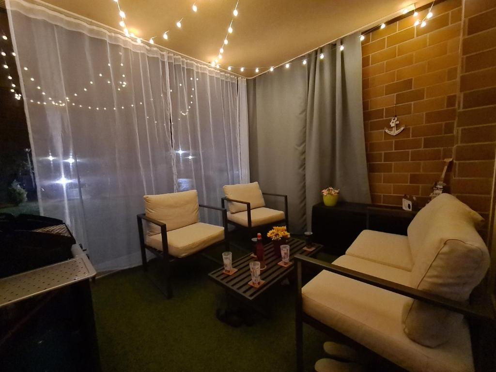
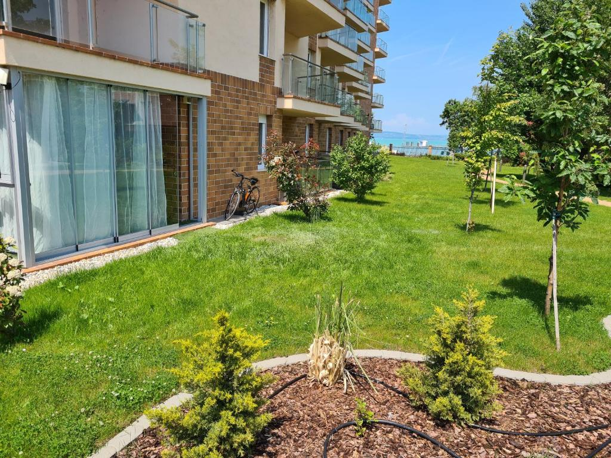
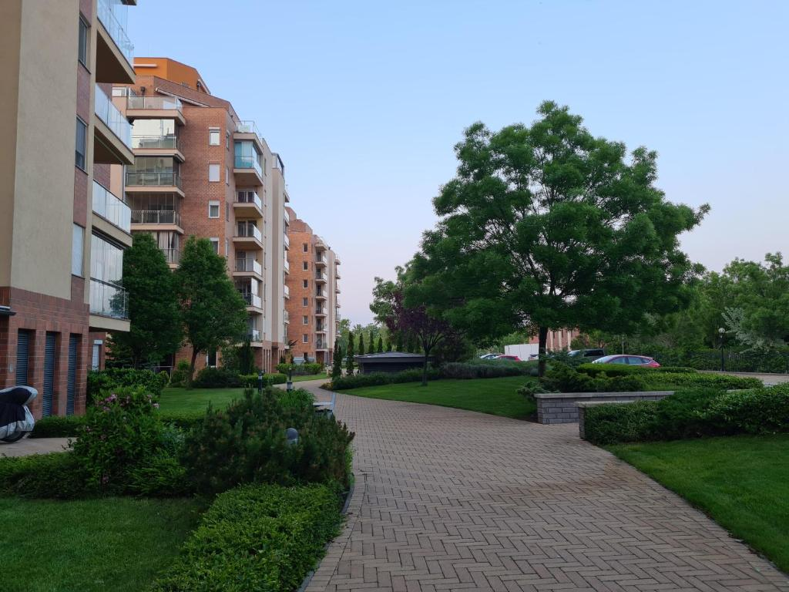
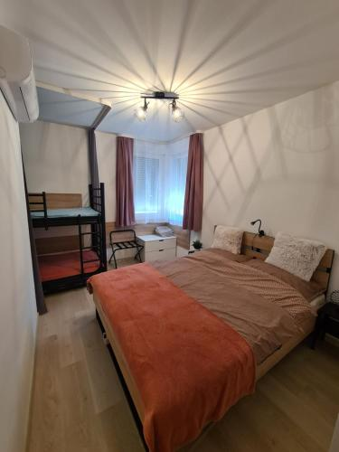
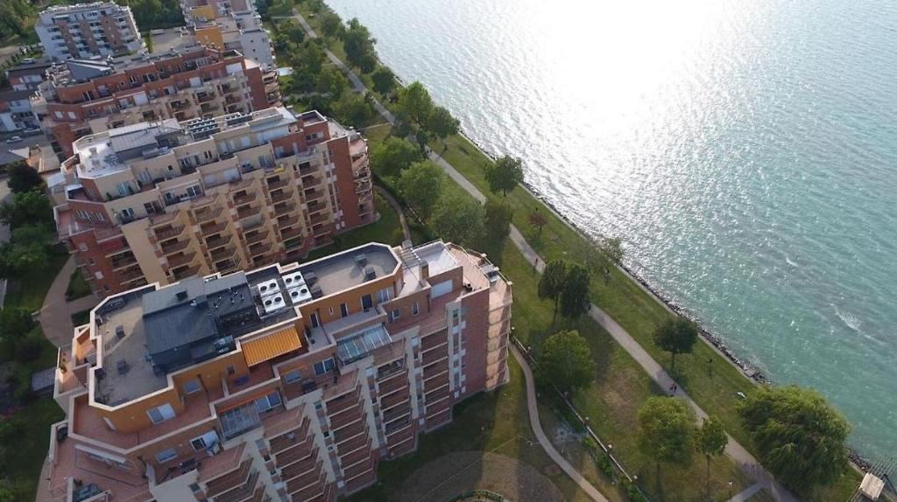
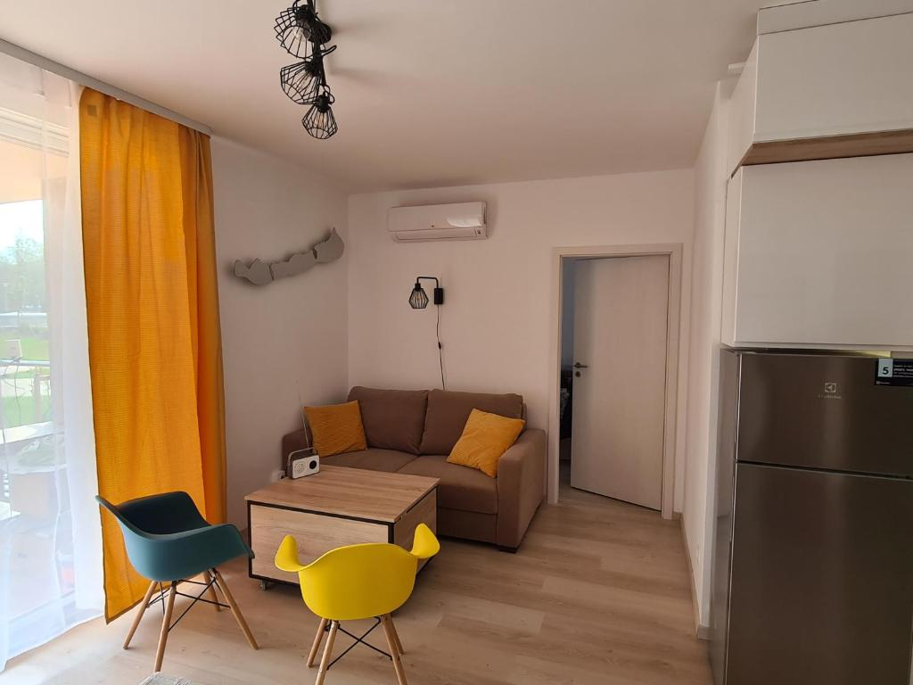
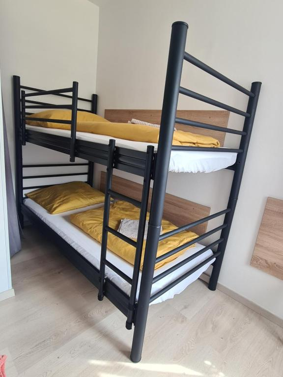
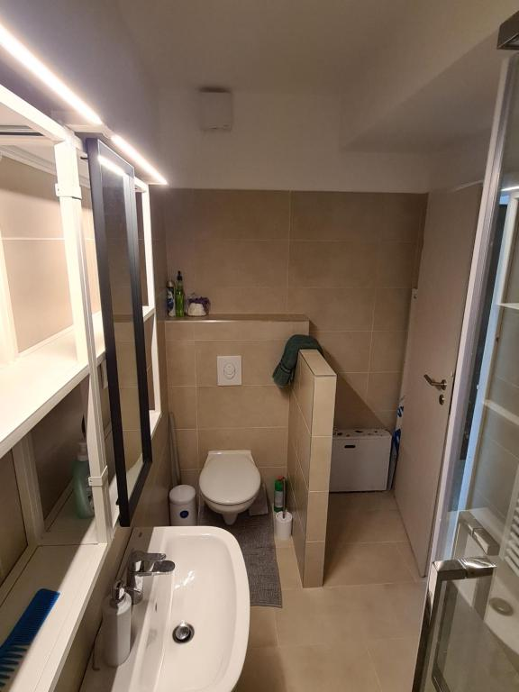
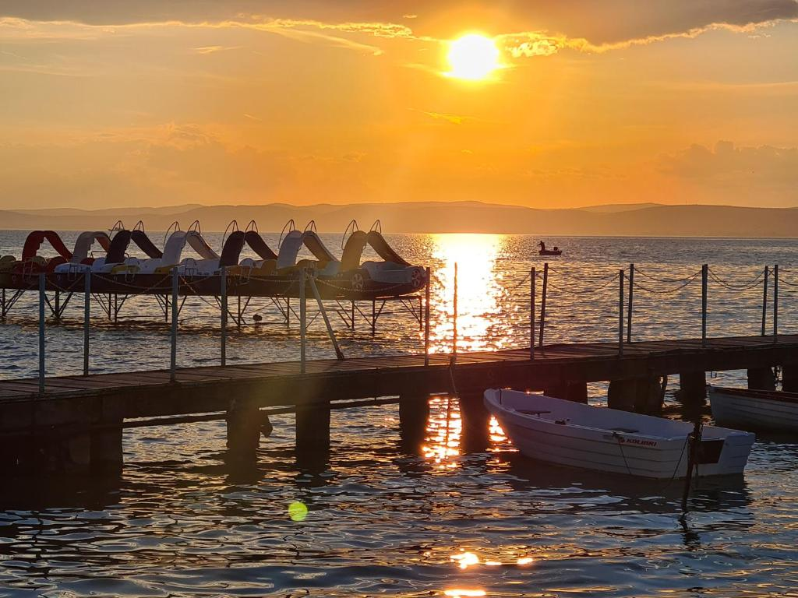
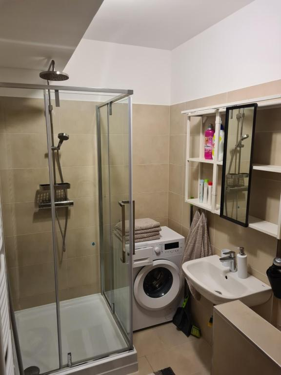
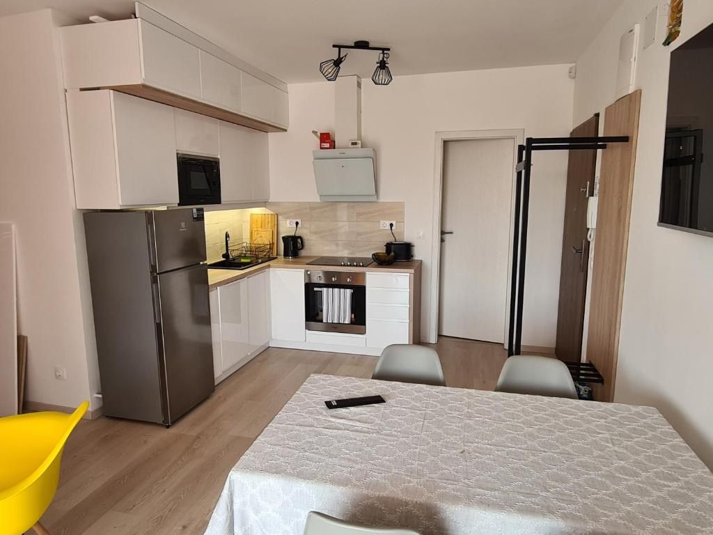
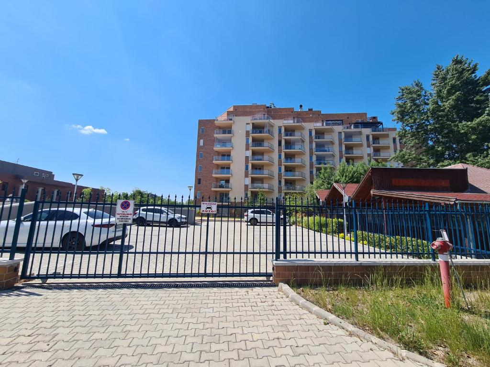
Az apartmanról
Fedezd fel a pihenés új szintjét az EDABeach Galerius Apartmanban, közvetlenül a Balaton partján, Siófok egyik legkedveltebb részén! Modern, teljesen felszerelt apartmanunk tágas terekkel, erkéllyel várja vendégeit. A Galerius Élményfürdő szomszédságában található szállás ideális választás pároknak, családoknak vagy baráti társaságoknak, akik a nyugalmat és a vízközelséget keresik.
Megközelíthetőség
Az EDABeach apartman könnyen megközelíthető autóval és tömegközlekedéssel is. Az apartman a Balatonpart közvetlen közelében, csendes, jól megközelíthető környéken található. A legközelebbi buszmegálló néhány perc sétára van, míg a vasútállomás és a belváros autóval vagy taxival 5–10 perc alatt elérhető. A vendégek számára ingyenes parkolási lehetőség biztosított a szállás közelében.